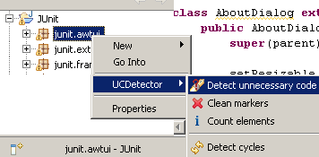
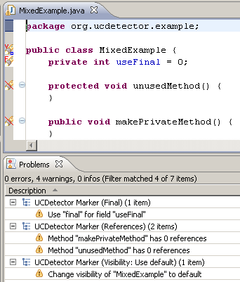
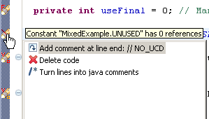

| Start |
| Preferences |
| More |
| Releases |
| FAQ |
| Custom detection |
| License |
 UCDetector: Unnecessary Code Detector
UCDetector: Unnecessary Code Detector
Start
AboutUCDetector (Unnecessary Code Detector) is a eclipse PlugIn tool to find unnecessary (dead) public java code. For example public classes, methods or fields which have no references. UCDetector creates markers for the following problems, which appear in the eclipse problem view:
UCDetector also finds cyclic dependencies between classes in your code. This cycle classes are shown in s special cycle view. |
 |
InstallationUse Update site or:
Quick startInstead of clicking Shift+Ctrl+G (search references in workspace) all the time, follow the next steps:
Really want to change code?The problems found by UCDetector, are only suggestions. Before changing code, you should really know what you are doing! If UCDetector tells you, that there are no references your code still may be used by:
Change visibility may cause problems with inheritance, reflection, instantiation... It's good idea to do a full text search in workspace for the piece of code, you want to change. |
 |
Change code, use QuickFixes!After checking carefully all the possibilities above, maybe you decide to change your code. Click on the marker to see QuickFixes's to change code:
|
 |
Ignore codeUse "NO_UCD" tag in code, for lines, which should be ignored:/** * Class is only used by reflection. * Write a "NO_UCD" comment at the end of the line. * This line will be ignored by UCDetector. */ public class BeanExample { // NO_UCD |
|